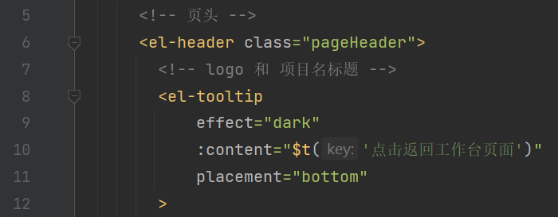
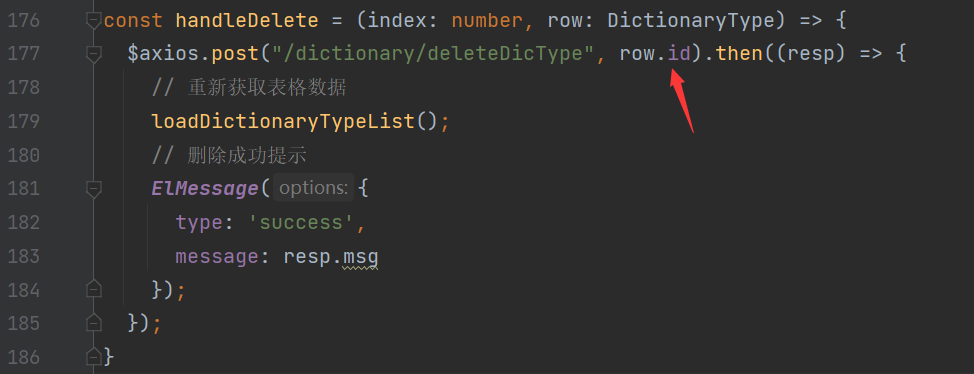

招聘管理系统项目笔记
Recruitment Management System
IBM定制班 实训项目 招聘管理系统
项目技术栈
-
后端
- SpringBoot
- SpringSecurity
- Mybatis
- MySQL
- Redis
-
前端
- Vue
- axios
- Pinia
- Element-Plus
- i18n
-
项目管理
- SVN
前后端分离的校验规则
- 前端携带用户名密码访问登录接口
- 后端负责验证并生成一个
JWT (加密的 json 格式的用户的签名(唯一标识))响应给前端 - 之后前端的每次请求都要在请求头中携带这个
JWT(Json Web Token) - 每次后端接收到请求后都会解析这个 token 验证用户权限返回资源
前后端分离的会话管理
- 【问题】前后端分离后，后端怎么知道这次请求是否是认证过了的（已经登录过的）难道每次请求都要查询数据库验证账号密码嘛？
- 在成功登录后将用户信息以 用户 ID 为 Key，用户信息 为 Value 存入 Redis
- 之后的每次校验解析 token 获取 用户 ID 从 Redis 中获取用户信息存入 SecurityContextHolder (Session)
- 【问题】为什么是存到 SecurityContextHolder 而不是 Session 中？
- SpringSecurity 会在认证成功后将用户信息保存到 SecurityContextHolder 中，是通过 ThreadLocal 来实现的 线程绑定 这里面的变量只能被当前线程使用，不能被其它线程访问和修改
- 在每次请求到来时，SpringSecurity 会从 Session 中将数据存入 SecurityContextHolder, 请求处理结束后将其中的数据拿出来保存到 Session 中，然后将 SecurityContextHolder 中的数据清空
- 这一策略非常方便用户在 Controller、Service 层以及任何代码中获取当前登录用户数据
- 【问题】为什么是存到 SecurityContextHolder 而不是 Session 中？
简略认证授权流程
-
当用户第一次登录时发送 login 接口请求，服务器将这个允许匿名访问的接口放行进入 Service 层
-
在 Service 层会将前端传来的用户名和密码存入 authenticationManager 进行认证
- 认证：在 UserDetailsService 的实现类中查询数据库中的用户名密码是否正确
- 错误：抛出异常，由前端处理
- 正确：查询对应的权限信息，将用户实例和权限列表封装成 UserDetails 的实现类
- 认证：在 UserDetailsService 的实现类中查询数据库中的用户名密码是否正确
-
认证通过后将 UserDetails 的实现类存入 Redis 缓存服务器，将用户ID 创建为 JWT 返回给前端存储
- 当用户发送非 login 接口请求时，进入过滤器
- 检查请求头中是否含有 token ，如果没有则报认证错误
- 解析 token 得到用户 ID ，如果解析失败抛出 token 不合法异常
- 通过用户 ID 从 Redis 中获取用户信息，如果没此用户抛出用户未登录异常
- 将用户信息和查询到的权限信息交给 SpringSecurity 的 SecurityContextHolder
- 放行
使用 UUID 做主键
MySQL 的 8.0 通过实现三个新的 SQL 函数提高 UUID 操作的易用性：
UUID_TO_BIN()，BIN_TO_UUID()，和IS_UUID()。第一个从 UUID 格式化文本转换VARBINARY(16)为第二个VARBINARY(16)到 UUID 格式化文本，最后一个检查 UUID 格式文本的有效性。存储为 UUIDVARBINARY(16)可以使用功能索引进行索引。功能UUID_TO_BIN()和UUID_TO_BIN()也可以洗牌与时间相关的位，在开始移动它们使得指数友好，避免在 B 树中的随机插入，这样降低了插入时间。这种功能的缺乏被认为是使用 UUID 的缺点之一。
数据库定义
- 数据字典类型表
- 所属公司 company
- 用户状态 user_status
- 性别 sex
- 学历 education
- 技术能力 tech_ability
- 语言能力 lang_ability
- 简历来源 source
- 是否服从 obey
- 面试状态 interview_status
- 面试结果 result
- 面试结果得分项 item
- 备注类型 comment_type
- 用户表
- status：0正常、1禁用
- 简历表
- sex：0女、1男
- education：0无、1专科、2本科、3硕士、4海归、5其它
- tech_ability：0无、1Java、2C++、3Python、4Go、5PHP、6Vue
- lang_ability：0无、1日语N4、2日语N3、3日语N2、4日语N1、5英语4级、6英语6级
- source：0校招、1官网、2内推、3宣讲会、4招聘软件、5其它
- obey：0不服从、1服从
- 面试表
- status：0等待指定Reviewer、0+1等待简历Review、1+1等待指定面试官、2+1等待确定面试时间、3+1等待面试、4+1等待面试提交反馈、5+1简历ReviewNG、6+1面试OK、7+1面试NG、8+1HOLD
- 面试反馈表
- result：0NG、1OK
- 面试反馈得分表
- item：……
- 备注表
- comment_type：0简历上传备注、1review备注、2面试反馈备注
- 权限表 code 的意义
CVUpload:*:*：的权限就是对 CVUpload 的所有数据的所有操作表 ：操作 ：数据：例如user:update:*的权限就是对 user 表的所有字段都有更新权限
代码规范
通用规范
-
代码必须经过 format
-
代码必须经过自检运行跑通后才能提交 SVN
-
代码书写应遵循
- 没做完或需要后期更改的地方，应写上 todo 注释，并注明用途
- 一行代码不得超过 120 字符
- 变量名必须见名知意，不得用拼音
-
注释书写应遵循
- 注释内容由空格开始、注释中英文前后添加空格
前端代码规范
-
功能相近的变量、方法、css 样式应写在一起
- templatr 标签内容顺序: 内容标签 👉 dialog 标签
- script 标签内容顺序: import 👉 功能性属性 👉 ref 属性 👉 reactive 属性 👉 方法 👉 钩子方法
-
空的双标签应尽可能写为单标签
命名规范
- views 文件名：小驼峰
- script 变量和方法名：小驼峰
- css 选择器：小驼峰
- 常量：全大写
注释
-
template 中代码注释
 -
script 中 import 语句注释
- script 中 const 属性注释
- script 中方法注释
- style 中注释：需标明生效位置
on-、before-开头的属性后对应的方法都叫做钩子方法，v-on、@开头的属性对应的方法叫做事件
换行
- 分行书写标签属性时，
>或/>需单独一行

- template、script、style 标签之间空一行，代码文件最后一行空一行
- 变量与变量之间、方法与方法之间、式样与式样之间，空一行
分号
- script 中写的代码结尾都应添加分号，方法中的语句都应以分号结尾
其它
-
图标的用法
- 禁止使用
:icon属性指定图标 - elementPlus 推荐使用
el-icon标签指定图标，且不需要单独导入
- 禁止使用
-
ts 说变量无法解析？
- 因为这个变量没有显式定义在 resp 中
- 可以使用
data['variable']的方式取得
后端代码规范
- 后端写的代码中不要出现业务上的常量，如需获取要在 constValue.properties 文件中定义使用 @PropertySource 配合 @Value 获取
命名规范
- Controller 及 Service 层接口及方法命名风格：add、remove、edit、get（getXxxxList、getXxxByXxx）
- Mapper 层方法命名风格：insert、delete、update、select（count）
- 类变量命名：类名小驼峰
- 功能性常量定义：全大写、
_分隔
注释
- 每个类的 class 语句上方书写文档注释，并注明作者和创建时间
- 在控制层的每个方法上方书写文档注释，并注明接口作用、参数内容、返回值功能
- 在服务层接口的每个方法上方书写文档注释，并注明接口作用、参数内容、返回值功能
- 在数据访问层接口的每个方法上方书写文档注释，并注明接口作用、参数内容、返回值功能
- 在服务层实现类中书写单行注释，要求只看注释就能明白业务的执行流程
换行
- 保证每一个类变量、方法前后都有一个空行
- 每个文件最后要有一个空行
- 较长的业务可按照逻辑添加空行
式样书规范
- 各画面 ID
- 登录画面：RMSL0101
- 菜单画面：RMSM0101
- 工作台画面：RMSW0101
- 简历上传画面：RMSU0101
- 面试一览画面：RMSV0101
- 面试Review画面：RMSR0101
- 面试反馈画面：RMSF0101
- 历史面试画面：RMSH0101
- 数据字典类型管理画面：RMSD0101
- 数据字典值管理画面：RMSD0201
- 用户管理画面：RMSU0201
- 角色管理画面：RMSU0202
- 权限管理画面：RMSU0203
- 部门管理画面：RMSD0301
前端遇到的问题
Vue3 如何打包成能直接运行的格式
- 在 vite.config.js 中设置 base 为相对路径
- 添加 plugin-legacy 插件生成传统浏览器的 chunk 及与其相对应 ES 语言特性方面的 polyfill
- 将 router 文件配置为根据 hash 匹配路径
- 执行打包命令
|
|
- 修改打包 dist 文件夹中的 index.html
- 删除红框部分代码
Vue 如何修改 Element-Plus 的底层样式
- 添加
:deep()
|
|
Vue3 如何修改 reactive 数组做响应式处理
-
不使用数据接口的情况
1 2 3const xxxList = reactive({ arr: [] })- 在 reactive 里面再封装一层，这样就可以直接
xxxList.arr = xxx修改数组
- 在 reactive 里面再封装一层，这样就可以直接
-
使用数据接口的情况
1const xxxList = reactive<xxxInterface[]>([]);- 使用 push 方法将展开的数据传进数组中:
xxxList.push(...resp.data);
- 使用 push 方法将展开的数据传进数组中:
Vue3 ref 和 reactive 的区别
ref是用来定义基本类型和数组类型和对象类型的，使用 ref 定义数组或对象类型时内部还是会调用 reactive 转为代理对象reactive一般用来定义对象类型，它是通过使用 Proxy（代理模式） 来实现响应式, 并通过 Reflect 操作 源对象 内部的数据
Vue @click 事件只点击一次却执行多次
- 在为
v-for的标签添加@click事件之后，每次点击都会被执行多次，暂时不了解因为什么
- 【解决】: 为事件添加
$event参数，并执行方法即可解决
npm install 下载缓慢
- 因为服务器在国外，大陆有时候连接不上
- 执行这条命令修改服务器为淘宝的就好了
|
|
后端遇到的问题
axios 传递的参数结尾多了一个等于号 ‘=’ ?
-
因为前端发送 axios 请求时，默认的请求头 headers 内部的 Content-Type 是 application/x-www-form-urlencoded;charset=UTF-8
-
这是一种键值对的数据结构，传输过程中把 json 当作 key，而 value 当作空值，所以传输到后端会多出等号
-
【解决】
-
可以通过修改前端和后端的数据编码格式解决
-
可以在前端用花括号包起来作为 json 传输，后端用 Map 接收
-
mybatis 的 resultMap 映射问题
- 当我将
id当作参数传给另一个查询的时候，这个主查询的 id 结果都为 null ？- 【解决】因为 mybatis 理解为这个属性应该被映射为别的值就没有给这个属性赋值，再次指定这个属性的映射即可
大写字母开头传值 springboot 为 null
-
因为 springboot 默认按照小驼峰解析 json 的值
- 【解决】将前端改为小驼峰即可，或使用
@JsonProperty注明属性名
- 【解决】将前端改为小驼峰即可，或使用
服务器部署遇到的问题
vue 项目部署到 nginx 服务器后，除首页外刷新都跳转 404 页面
- 为 nginx 设置转发
|
|
长时间不进行操作 redis 抛出异常
-
异常信息：
1org.springframework.data.redis.RedisSystemException: Redis exception; nested exception is io.lettuce.core.RedisException: java.io.IOException: 远程主机强迫关闭了一个现有的连接。- 似乎是因为 ssh 的连接超时造成的, 根据网上的方法设置了 ssh
超时时长和重试次数但似乎无效
- 似乎是因为 ssh 的连接超时造成的, 根据网上的方法设置了 ssh
-
2022-12-16 07:21:55 证实无效果，重试次数设置过高反而造成多次无响应之后才提示登录过期
项目特色
- 主要
- 灵活性、可扩展性
- docker 部署、域名解析
- 数据库
- 标准的 RBAC 模型结构
- MySQL8 的 UUID
- 数据字典
- 索引
- 前端
- axios 的前后置拦截
- 错误页面
- Vue3 + Ts
- transition 过度动画、v-loading
- i18n
- 组件化开发
- 未使用任何前端模板
- 实用的工作台画面
- 后端
- minio、kkfileview 简历预览
- springSecurity 安全框架、一用户可同时拥有多角色
- Redis 用户认证、令牌自动续约、数据字典缓存、缓存击穿的解决
- 实时的用户锁定
- 全局异常捕获、返回值枚举类、properties 配置文件
- 事务、乐观锁
- POI: easyExcel 数据导出
- RabbitMQ 邮件